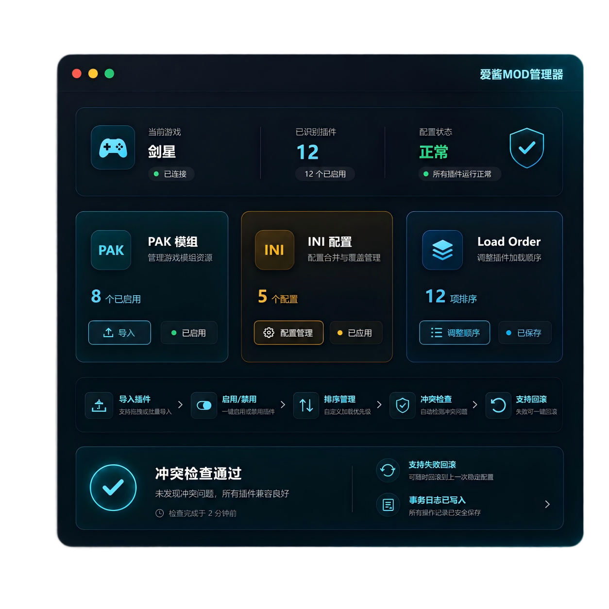
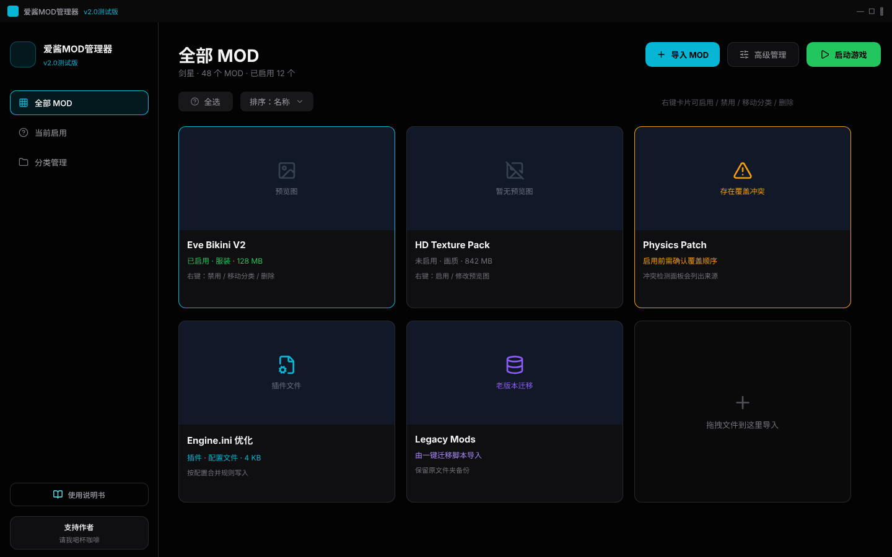
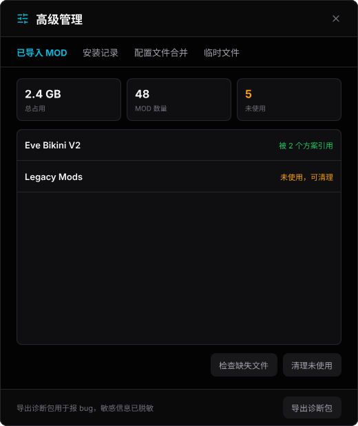
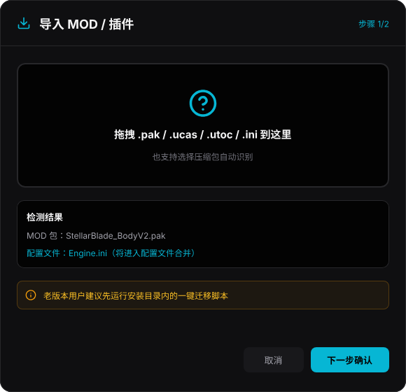
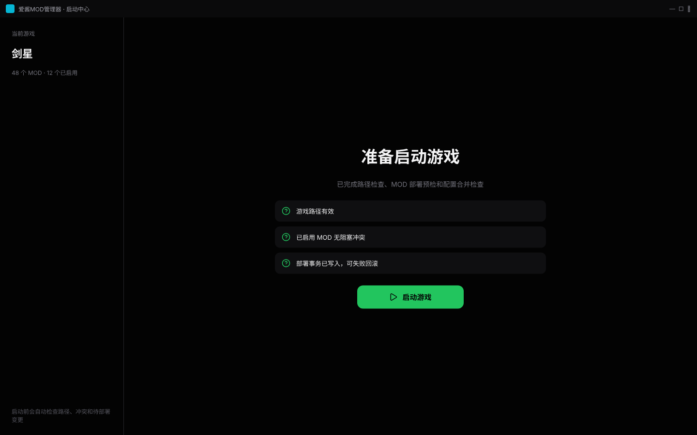
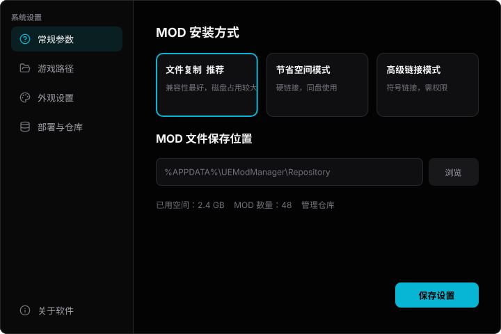
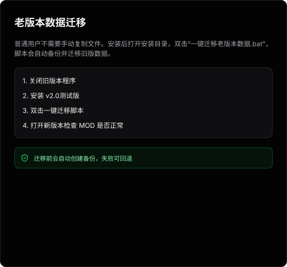

多游戏引擎MOD/插件管理
不局限单一引擎，也不只服务 MOD 文件；常见插件、配置文件和资源包都可以统一导入、识别、分类、启用和禁用。
为多引擎游戏打造的专业 MOD 管理工具。导入、启用、禁用、配置合并、冲突检查和老版本迁移，都放进一个更安全、更清晰的工作流。这一版把用户数据从安装目录里独立出来，换盘存 MOD 也变成了一键操作。

核心功能
面向普通玩家保持简单入口，面向复杂插件组合提供更完整的导入、启用、禁用、迁移和排查能力。
不局限单一引擎，也不只服务 MOD 文件；常见插件、配置文件和资源包都可以统一导入、识别、分类、启用和禁用。
核心 MOD 管理不依赖云端；没有网络时，也可以继续管理本地 MOD 数据。
从 v2.1.0 起，MOD 清单、方案、分类、设置和日志都写在系统的用户数据目录，不再落在安装目录里；卸载或覆盖安装不会连着删掉，装在 C 盘 Program Files 里也不会因为没有写权限出问题。
首次运行会问你想把 MOD 放在哪个盘，并列出每个盘的可用空间；之后想换盘，程序自己把数据搬过去——先复制、核对无误才删原件，中途关机断电也不会丢。
部署前生成计划，执行中记录事务，异常时可恢复或回滚；保存失败会当场告诉你，不会界面上显示成功、重启后数据却没了。
面对 ini 等配置插件时，提供合并、预览和冲突检查思路。
界面预览
展示主界面、高级管理、导入流程、启动中心和迁移说明。


高级管理 已导入 MOD、安装记录、配置合并、临时文件和诊断导出。
导入 MOD / 插件 拖拽导入、文件类型检测，并提醒老用户先运行迁移脚本。
启动中心 启动前检查路径、冲突和部署事务，降低带错状态启动游戏的风险。
系统设置 部署方式、仓库路径、外观、游戏路径和基础参数集中管理。
一键迁移说明 用普通用户能看懂的步骤解释老版本升级迁移。支持游戏与资源生态
 黑神话悟空
黑神话悟空 识质存在
识质存在 33号远征队
33号远征队 生化危机9
生化危机9老用户升级
安装 v2.1.0 后，安装目录会包含“一键迁移老版本数据.bat”。关闭旧版本程序后双击运行，脚本会尝试备份并迁移旧数据。
下载与文档
扫描下方二维码任选一个网盘下载。首次使用前建议对重要 MOD 和游戏存档留一份备份。
 百度网盘
提取码：6679
百度网盘
提取码：6679
 迅雷网盘
迅雷网盘
 UC网盘
UC网盘
 夸克网盘
夸克网盘
隐私说明
v2.1.0 启动时会检查有没有新版本，同时告诉我们“有多少人在用”。这两件事是同一个请求，首次启动会先明确问过你，在你回答之前一个字节都不会发送。
这些信息只用来统计使用人数和版本分布，不用于广告，也不会提供给第三方。
鸣谢名单
项目能持续更新，离不开玩家、测试用户和群友们的反馈、建议与支持。
胖虎、YUki、Tarnished、春告鳥、蘭、虎子、神秘不保底男、文铭、阪、林墨、Daisuke、虎子哥、枪王、爱酱游戏群全体群友
FAQ
主要是三件事：从这一版起 MOD 清单、方案、分类和设置写在系统用户数据目录，不再落在安装目录里，卸载或覆盖安装不会连着删掉；想换个盘存 MOD 时程序自己把数据搬过去；分类丢失、右键菜单点不动、保存失败不提示这些老问题都已修复。
从 v2.1.0 起，MOD 清单、方案、分类、设置和日志都写在系统的用户数据目录（%LOCALAPPDATA%\UEModManager），不再落在安装目录里，卸载或覆盖安装不会连用户数据一起删掉。从旧版本升级的话，请先按页面上方的「迁移说明」运行一次一键迁移脚本。MOD 包本身放在包仓库，位置可以自己选，也可以随时换盘。
启动时会检查有没有新版本，同时发送一个随机生成的设备编号、软件版本号和 Windows 版本号；登录过账号的话还会带一段由邮箱算出来的字符串，只用来统计有多少人在用，还原不回邮箱。不发送邮箱明文、电脑名、文件路径，也不发送你装了哪些 MOD。首次启动会先问过你，随时可以在「设置 → 常规参数 → 检查更新与匿名统计」里关掉。详见上方隐私说明。
可以。v2.1.0 的核心能力是本地 MOD 管理，不登录也可以导入、分类、启用、禁用和迁移本地数据。
不会。当前账号能力不负责同步插件/MOD 文件，MOD 文件仍以本地仓库和游戏目录为准。重要文件建议自己也留一份备份。
关闭旧版本程序，安装 v2.1.0 后运行安装目录内的“一键迁移老版本数据.bat”，完成后打开新版本检查结果。
包仓库和游戏必须在同一个盘，硬链接才能生效；不在同一个盘时只能退回复制，会实打实多占一份空间。v2.1.0 遇到这种情况会直接提示，并给出一键把 MOD 仓库搬到游戏所在盘的按钮。
先查看高级管理中的安装记录和诊断导出；如果涉及路径、权限或冲突，请通过使用说明书查找对应处理步骤。
当前围绕剑星、黑神话悟空、识质存在、33号远征队、生化危机9、暗黑破坏神等单机游戏插件场景设计，并持续扩展更多游戏适配。
 微信
微信
 支付宝
支付宝